Equipos

Lista de equipos que participan en la Liga Pro.
- Bercelona Sporting club
- Club Sport Emelec
- Sociedad deportiva Aucas
- Liga Deportiva Universitaria
- Club Deporpivo El Nacional
- Delfin Sporting Club
- Club Deportivo Cuenca
- Club Universidad Católica
- Club Deportivo Macara
- Club Independiente del valle
Próximos Partidos
Información sobre los próximos partidos de la liga.
FECHA 25 |
equipo1 | equipo2 | hora |
|---|---|---|---|
| viernes 18 de oct | orence | libertad | 19:00 |
| sabado 19 de oct | Mushuc Runa | Dep. Cuenca | 14:00 |
| Sabado 19 de oct | Ind.valle | Imb | 16:30 |
| sabado 19 de oct | tecnico U | liga | 19:00 |
Clasificación
Tabla de posiciones actual.
| Pos. | Pnt | g | e | p | gf | cg | dg | |
|---|---|---|---|---|---|---|---|---|
| Club Independiente del Valle | 52 | 24 | 15 | 7 | 2 | 41 | 19 | 22 |
| Barcelona Sporting Club | 44 | 24 | 13 | 5 | 6 | 35 | 22 | 13 |
| Liga Deportiva Universitaria | 49 | 24 | 15 | 4 | 4 | 45 | 26 | 19 |
partidos
El partido de Liga de Quito vs Orense Liga Pro Ecuador 2024